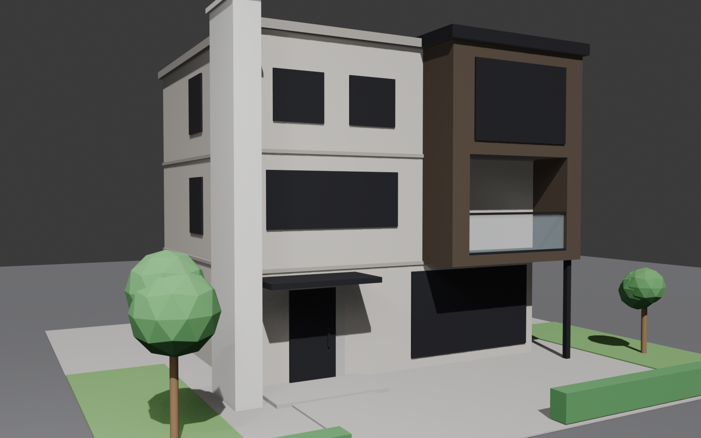
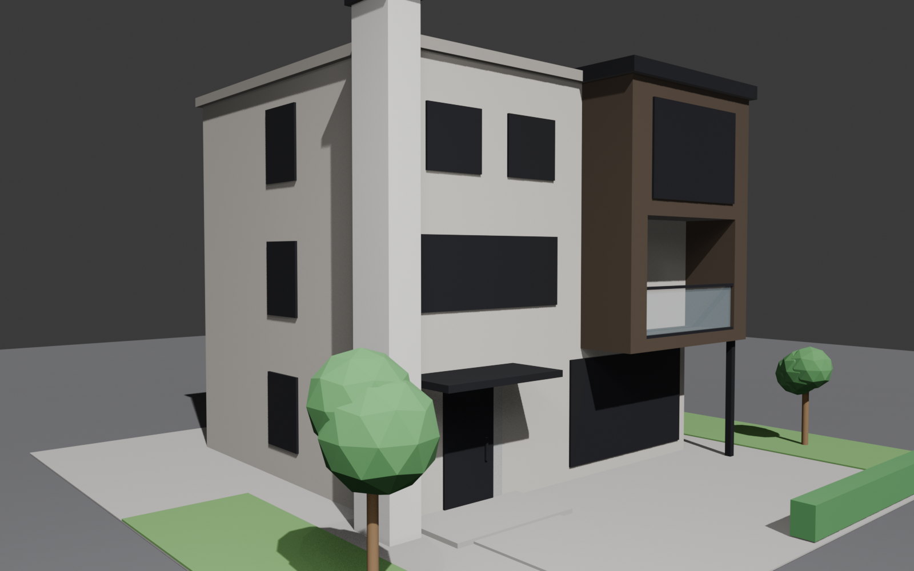
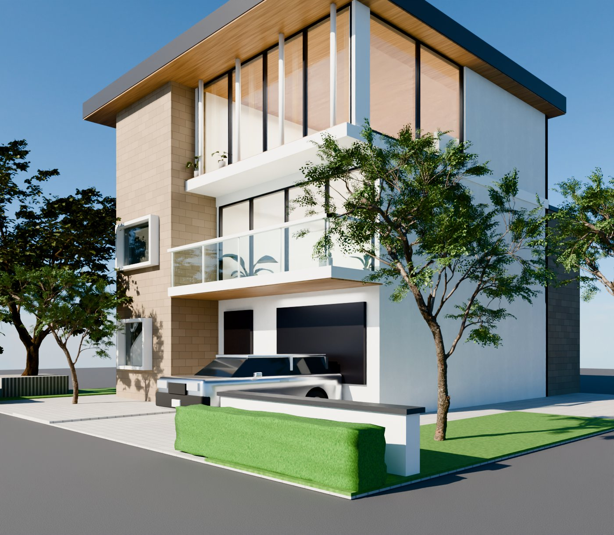
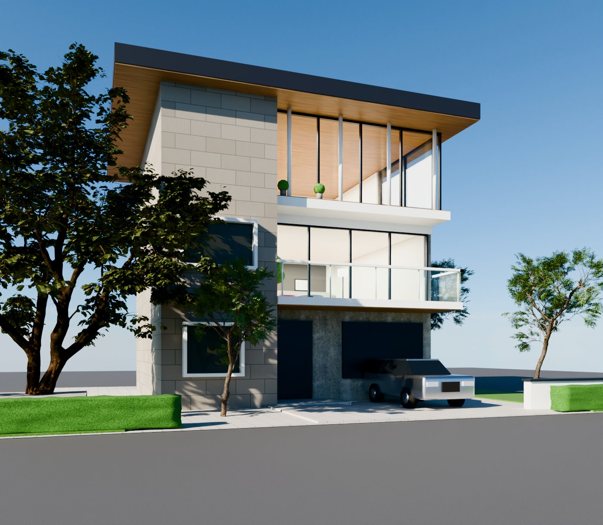
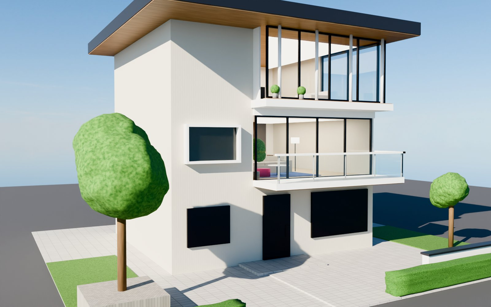

実在モデルハウスを参考にした3Dモデリング検証
— 積水ハウス「BIENA（ビエナ）」風
使用したプロンプト
PROMPT
fable5の性能を活用して、家をモデリングしたい。 Blenderで新規のプロジェクトを起こして、下記の家をモデリングして。 https://www.jutakutenjijo.com/housemakers/sekisuihouse/biena
※ 参照ページは直接アクセスできなかったため（403）、Claude が Web 検索で BIENA の設計特徴を調査し、それをもとにモデリングを実行。
結果（レンダリング）


処理統計
約9.8分
AI処理時間（合計）
3回
プロンプト数
約4.8万
出力トークン
約777万
入力トークン（累計）
約95%
キャッシュ読込率
Fable 5
使用モデル
※ セッションログ（トランスクリプト）から集計。入力トークンの大部分はプロンプトキャッシュからの読み込み（約740万トークン）で、実際の課金対象は大幅に少なくなります。処理時間はAIが応答・ツール実行していた時間の合計です。
※ 上記はモデリング作業のみの数値です。本サイトへの掲載・公開作業（外観・内観の2ページ制作＋統計集計＋デプロイ障害対応、Claude Fable 5）は別途 合計 約39分・出力 約10.1万トークン・入力 約1,709万トークン（キャッシュ読込率 約94%）でした。
再現した BIENA の特徴
- 重量鉄骨3階建て・フラットルーフ — 都市型の直方体コンポジション
- BOXデザインの凹凸 — グレージュ本体＋ダークブロンズBOXの異素材構成
- 張り出しBOX＋細い鉄柱 — βシステム構法らしい大胆な持ち出し
- 2Fインナーバルコニー — ガラス手すり＋黒笠木
- 大開口 — 1Fワイドリビング窓、2F横連窓、3FワイドFIX窓
- 白の全高アクセントフィン — 玄関脇の縦基調
- 黒ハイドア玄関＋フラット庇 — 階見切りの水平リビールライン
- 外構 — アプローチ・芝・生垣・シンボルツリー
アップデート（2026-07-12）— フォトリアル化・内観再現・構造修正
初回掲載分（2026-07-06）のモデルをベースに、元サイトの外観・インテリア写真への忠実度を高める大規模アップデートを実施。 マテリアルの実写テクスチャ化、内観の作り込み、構造不整合の修正、レンダリングアングルの変更まで、すべて Claude Fable 5 との対話のみで完結しています。



主な更新内容
- 外壁のPBRテクスチャ化 — Poly Haven の実写テクスチャ＋プロシージャル目地で、45×22.5cm の小口タイル（縦リブ・馬目地）を表現。「茶色いタイルの塔・棟」と「白い本体」を写真どおりに描き分け
- 構造不整合の修正 — 壁内に埋没していた2Fバルコニーの掘り込み、支柱の追加、3F出隅の隙間封鎖、フィン壁の浮き・ドアのめり込み解消など計10箇所以上
- 内観の忠実再現 — 元サイト「インテリア」タブの写真3枚を参照し、2F LDK（ソファ・ラグ・ダイニング・キッチン・アクセントウォール）と3Fペントハウス（白ソファ・黒チェア・暖炉壁・ウッドデッキ）を造作
- ガラスの透過表現 — 透明BSDF＋視線角度連動の弱い反射というアーキビズ定番シェーダーに置き換え、昼景でも室内が見える「イイ感じの透け感」を実現
- フォトスキャン植栽 — ローポリ樹木を Poly Haven のジャカランダ＋広葉樹に置換。室内の鉢植えもアンスリウム／カラテアの実写スキャンモデルに
- カーポートの車を再現 — ホイールアーチのくり抜き、ミラー・グリル・バンパー等を備えたシルバーワゴンをプリミティブから造形
- 照明のHDRI化 — Poly Haven の晴天HDRIをパックし、太陽方向をアングルに合わせて最適化。室内はエリアライトで昼景でも内観が沈まない光量に
- レンダリング設定 — Cycles 128サンプル＋デノイズ、AgX トーンマップ。元サイトと同アングル＋右斜め45度の2構図をプリセット